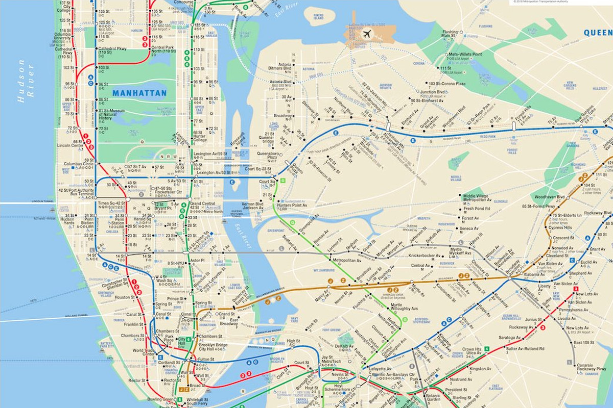

<strong> Instructor: </strong>  Prof. Rebecca Ramnauth <br>
<strong> Email:</strong>  rebecca.ramnauth@yale.edu <br>

<!--<iframe src="https://docs.google.com/presentation/d/e/2PACX-1vQDaXNmZ73iiV43Ut_Byp_jsIrtJxtfAN4PaN3QUOp4Ksv8Fa5iNwGHgW3zyh74wndpQ32b8Juo9LRz/embed?start=false&loop=false&delayms=3000" frameborder="0" width="800" height="480" allowfullscreen="true" mozallowfullscreen="true" webkitallowfullscreen="true"></iframe>-->

<h1> Something should go here... </h1>

Until then, enjoy this map of the NYC subway and send your suggestions to rebecca.ramnauth@yale.edu



<!---->